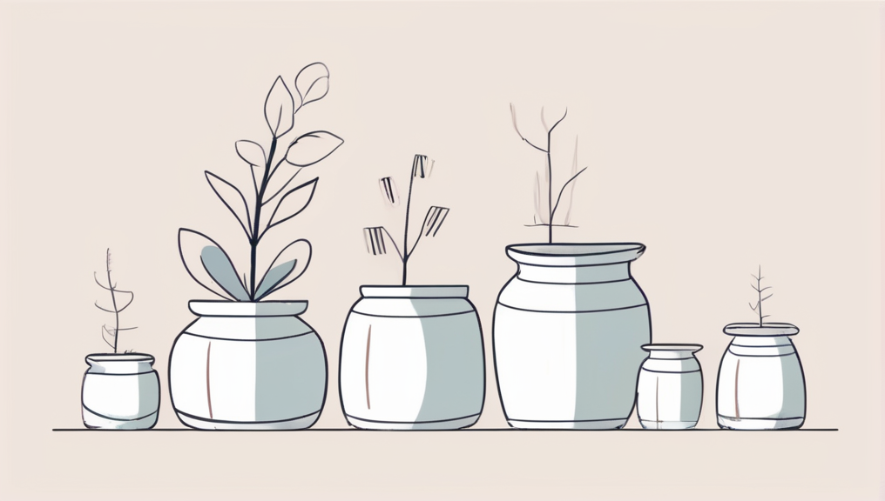
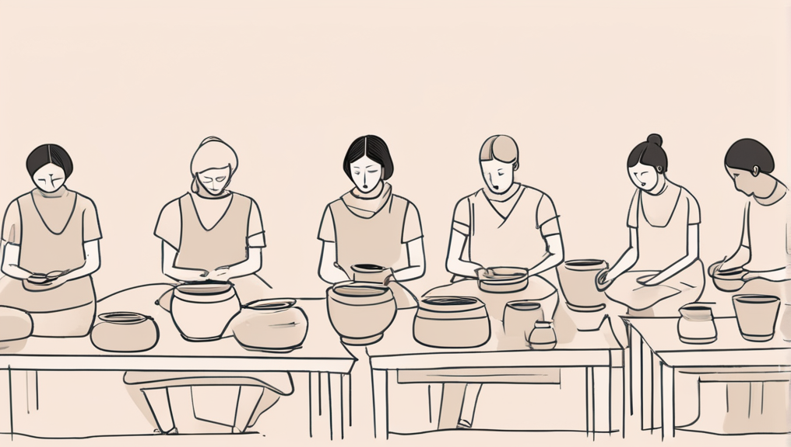
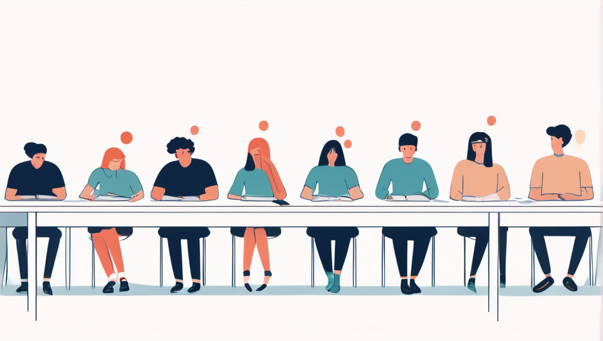
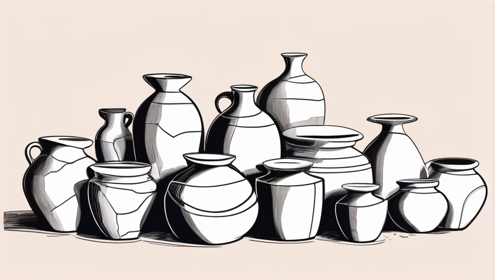

Al final de enero decidí meterme de lleno en el mundo del Web 3.0 y la blockchain, con la idea de crear mi propia criptomoneda.
Avanzaba rápido, aprendía conceptos por todos lados y tenía mil ideas para implementar… pero siempre llegaba al mismo punto: tenía una idea aquí, otro concepto allá. Acumulaba ideas, pero no pasaba a la acción.
Me hice la pregunta clásica: Why (ver: Start with a Why). Y ahí me di cuenta de algo importante.
No empezaba porque me decía que tenía que hacer las cosas bien. Si iba a lanzar una moneda, tenía que hacerla bien. Al final de cuentas, se trataba de mi imagen, ¿no?
El problema con esa mentalidad era que aprendía muchísimo, acumulaba información, aprendía y aprendía… pero siempre me decía que aplicaría todo eso al final del año.
Empecé a frustrarme. Quería pasar a la creación, pero mi propia mente me lo impedía porque sentía que aún no estaba listo. Tenía las ideas al 60%, pero me faltaba ese 40%.
No empezaba porque me decía que tenía que hacerlo “bien”. Si iba a lanzar una moneda, tenía que ser perfecta, ¿no? Al final, se trataba de mi imagen… o al menos eso creía.
Entonces recordé una frase que me marcó de adolescente, atribuida a Mohamed Ali:
“Que saltes cinco minutos más tarde al agua no hará que sea más caliente. Es cuando estás dentro que deja de ser fría.”
No estoy seguro de que Ali haya dicho exactamente eso, pero cada vez que procrastino, me acuerdo de esa frase.
Otro ejemplo que me vino a la mente mientras escribía este post es la anécdota de Picasso.
Hizo un garabato en una servilleta mientras tomaba café en un bar y luego se la guardó en el bolsillo.
Una mujer lo vio, se acercó y le preguntó si podía comprarlo. Picasso dijo:
— Ok, serán 5 mil euros.
La señora, sorprendida, respondió:
— ¿Pero si solo te tomó 15 minutos?
Y Picasso contestó:
— No me tomó 15 minutos. Me tomó 60 años.
Tampoco sé si la historia fue exactamente así, pero me gusta porque ilustra perfectamente la idea: la cantidad termina generando calidad.
Antes existía la creencia de que los artistas tenían un “don”. Yo, personalmente, pienso que Picasso podía hacer eso porque durante esos 60 años produjo muchas obras que no eran tan buenas. Como se dice en español: la práctica hace al maestro.
Pensé en todo eso durante varias horas. El punto de inflexión llegó cuando, por quinta vez, busqué el ejemplo de los vasos de cerámica que dos grupos de estudiantes tenían que hacer.
Lo encontré en Art & Fear y también aparece en Atomic Habits. Si no tienes tiempo para leer los libros, aquí va la idea esencial:
(las imágenes las hice con Dezgo y otra IA, así que no esperen gran ilustración 😅)
Un profesor dividió la clase en dos: Al grupo de la izquierda lo calificaría solo por la cantidad —cuanto más produjeran, mejor—. Al grupo de la derecha lo calificaría solo por la calidad —solo necesitaban una pieza perfecta para obtener la máxima nota—.
Durante el curso, el grupo de cantidad no paró de fabricar piezas: probaban, se equivocaban, ajustaban técnicas y aprendían en el proceso. Su foco era producir mucho, experimentar y mejorar con cada intento.
El grupo de calidad, en cambio, pasó el tiempo teorizando sobre la pieza perfecta y esperando el momento correcto. Terminó con pocas pruebas y muchas ideas sin materializar. Los errores visibles del otro grupo fueron, en realidad, su escuela práctica.
Al final, las mejores piezas surgieron del montón del grupo de cantidad. La lección es clara: producir mucho, fallar y aprender conduce a la mejora. La búsqueda de perfección paraliza.
Quantity leads to quality.
Al recordar esta historia tomé una decisión importante: No voy a seguir con el método de teorización infinita. Voy a simplemente intentar hacer algo, luego ver los errores que cometí, aprender de ellos, mejorar, y pasar a la siguiente versión.
Como dice Nelson Mandela:
“Nunca pierdo. O gano o aprendo.”
Después de pensar que mi moneda tendría el nombre de una madera especial (me ahorro los detalles por ahora), entendí que antes de llegar a ese punto debía hacer algo que tomara menos tiempo que un tronco de madera, y que, como la madera, fuera algo renovable y usado como método de intercambio de valor.
(La idea de “renovable” es porque el proyecto debe poder ser reproducible por cualquiera. Tomaría tiempo, pero sería reproducible y no tendría límites de supply.)
Y después de pensarlo unos minutos, se me hizo claro: el Barley (trigo).
No voy a entrar en la historia de cómo el trigo era usado en economías antiguas, pero encajaba perfecto con mi metáfora de crear una moneda evolutiva con el tiempo.
Lo primero que me propuse fue una deadline: 1º de marzo.
Luego simplemente hice un boceto de ciertas cosas que ya conocía y armé un planning.
Como era la primera moneda digital que iba a hacer y solo tendría un mes (febrero), tuve que tomar una decisión: aunque no me gusta nada la centralización, tendría que hacer un sistema que, en gran parte, fuera manejado por mí.
Para respetar la deadline, en vez de crear algo donde cualquiera pudiera unirse cuando quisiera, crear nodos, hacer publicidad, etc., decidí algo mucho más simple: tomar 5 amigos y lanzar el proyecto las primeras dos semanas con ellos, y durante el resto del desarrollo agregar 5 más.
La duración del proyecto sería de 10 semanas.
Cada semana se agregaría una supply de 10 coins a la cuenta principal del proyecto y luego, según los parámetros definidos o las transacciones realizadas, yo ejecutaría las transacciones en la blockchain.
Para garantizar que hubiera intercambios entre ellos, pensé en hacer juegos evolutivos en dificultad y challenges donde los que los superaran fueran recompensados. Los que aportaran ideas o trabajo útil serían valorados, y cada participante podría proponer artículos o servicios, ponerles precio y negociar con los demás.
La idea era muy buena, claro.
Pero había un gran problema:
¿Cómo diablos iba a hacer todo eso posible?
¿Cómo iba a hacer una blockchain?
¿Cómo iba a asegurar la seguridad de las direcciones?
¿Cómo iba a generar las funciones de hash, el mempool, el manejo de llaves y, sobre todo, la ciberseguridad?
¿Cómo iba a hacer el protocolo de validación y el intercambio de mensajes entre personas que no se conocían?
Un millón de cosas por hacer… y que yo nunca había hecho en mi vida.
Pero justamente ese era el objetivo: empezar desde cero, incluso sin tener el conocimiento o la experiencia suficiente.
Este pseudo-texto lo escribí el 1º de febrero. Poco a poco iré agregando novedades sobre el proyecto.
Mientras tanto, puedes ver el whitepaper que ya empecé a escribir aquí:
[Link to white paper]
Justo antes de publicar este post, se lo estaba mostrando a un amigo que estudia medicina y está muy metido en neurociencias.
Me explicó algo que encaja perfectamente con esta idea. La primera vez que hacemos algo nuevo, la amígdala (la parte del cerebro relacionada con el miedo y el estado de alerta) se activa y nuestro cuerpo lo interpreta casi como una amenaza.
Pero cuando repetimos muchas veces la misma acción, el cerebro empieza a reconocer la situación como terreno familiar y deja de activar esa alerta.
La dificultad real no cambia… lo que cambia es nuestra percepción de la dificultad. Por eso los militares, los deportistas, los pilotos o incluso los cirujanos repiten los mismos gestos una y otra vez: no solo para mejorar la técnica, sino para que, cuando llegue el momento del verdadero desafío, el cerebro simplemente diga: “esto ya lo conozco, puedo manejarlo”.
Tanx Geor… 😉